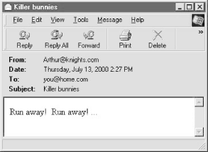
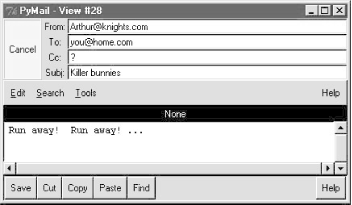

| I l@ve RuBoard |
|
11.3 Processing Internet EmailSome of the other most common higher-level Internet protocols have to do with reading and sending email messages: POP and IMAP for fetching email from servers,[4] SMTP for sending new messages, and other formalisms such as rfc822 for specifying email message contents and format. You don't normally need to know about such acronyms when using common email tools; but internally, programs like Microsoft Outlook talk to POP and SMTP servers to do your bidding.
Like FTP, email ultimately consists of formatted commands and byte streams shipped over sockets and ports (port 110 for POP; 25 for SMTP). But also like FTP, Python has standard modules to simplify all aspects of email processing. In this section, we explore the POP and SMTP interfaces for fetching and sending email at servers, and the rfc822 interfaces for parsing information out of email header lines; other email interfaces in Python are analogous and are documented in the Python library reference manual. 11.3.1 POP: Reading EmailI used to be an old-fashioned guy. I admit it: up until recently, I preferred to check my email by telneting to my ISP and using a simple command-line email interface. Of course, that's not ideal for mail with attachments, pictures, and the like, but its portability is staggering -- because Telnet runs on almost any machine with a network link, I was able to check my mail quickly and easily from anywhere on the planet. Given that I make my living traveling around the world teaching Python classes, this wild accessibility was a big win. If you've already read the web site mirror scripts sections earlier in this chapter, you've already heard my tale of ISP woe, so I won't repeat it here. Suffice it to say that times have changed on this front too: when my ISP took away Telnet access, they also took away my email access.[5] Luckily, Python came to the rescue here, too -- by writing email access scripts in Python, I can still read and send email from any machine in the world that has Python and an Internet connection. Python can be as portable a solution as Telnet.
Moreover, I can still use these scripts as an alternative to tools suggested by the ISP, such as Microsoft Outlook. Besides not being a big fan of delegating control to commercial products of large companies, tools like Outlook generally download mail to your PC and delete it from the mail server as soon as you access it. This keeps your email box small (and your ISP happy), but isn't exactly friendly to traveling Python salespeople -- once accessed, you cannot re-access a prior email from any machine except the one where it was initially downloaded to. If you need to see an old email and don't have your PC handy, you're out of luck. The next two scripts represent one solution to these portability and single-machine constraints (we'll see others in this and later chapters). The first, popmail.py, is a simple mail reader tool, which downloads and prints the contents of each email in an email account. This script is admittedly primitive, but it lets you read your email on any machine with Python and sockets; moreover, it leaves your email intact on the server. The second, smtpmail.py, is a one-shot script for writing and sending a new email message. 11.3.1.1 Mail configuration moduleBefore we get to either of the two scripts, though, let's first take a look a common module they both import and use. The module in Example 11-15 is used to configure email parameters appropriately for a particular user. It's simply a collection of assignments used by all the mail programs that appear in this book; isolating these configuration settings in this single module makes it easy to configure the book's email programs for a particular user. If you want to use any of this book's email programs to do mail processing of your own, be sure to change its assignments to reflect your servers, account usernames, and so on (as shown, they refer to my email accounts). Not all of this module's settings are used by the next two scripts; we'll come back to this module at later examples to explain some of the settings here. Example 11-15. PP2E\Internet\Email\mailconfig.py################################################################ # email scripts get their server names and other email config # options from this module: change me to reflect your machine # names, sig, etc.; could get some from the command line too; ################################################################ #------------------------------------------- # SMTP email server machine name (send) #------------------------------------------- smtpservername = 'smtp.rmi.net' # or starship.python.net, 'localhost' #------------------------------------------- # POP3 email server machine, user (retrieve) #------------------------------------------- popservername = 'pop.rmi.net' # or starship.python.net, 'localhost' popusername = 'lutz' # password fetched of asked wehen run #------------------------------------------- # local file where pymail saves pop mail # PyMailGui insead asks with a popup dialog #------------------------------------------- savemailfile = r'c:\stuff\etc\savemail.txt' # use dialog in PyMailGui #--------------------------------------------------------------- # PyMailGui: optional name of local one-line text file with your # pop password; if empty or file cannot be read, pswd requested # when run; pswd is not encrypted so leave this empty on shared # machines; PyMailCgi and pymail always ask for pswd when run. #--------------------------------------------------------------- poppasswdfile = r'c:\stuff\etc\pymailgui.txt' # set to '' to be asked #--------------------------------------------------------------- # personal information used by PyMailGui to fill in forms; # sig -- can be a triple-quoted block, ignored if empty string; # addr -- used for initial value of "From" field if not empty, # else tries to guess From for replies, with varying success; #--------------------------------------------------------------- myaddress = 'lutz@rmi.net' mysignature = '--Mark Lutz (http://rmi.net/~lutz) [PyMailGui 1.0]' 11.3.1.2 POP mail reader moduleOn to reading email in Python: the script in Example 11-16 employs Python's standard poplib module, an implementation of the client-side interface to POP -- the Post Office Protocol. POP is just a well-defined way to fetch email from servers over sockets. This script connects to a POP server to implement a simple yet portable email download and display tool. Example 11-16. PP2E\Internet\Email\popmail.py#!/usr/local/bin/python
######################################################
# use the Python POP3 mail interface module to view
# your pop email account messages; this is just a
# simple listing--see pymail.py for a client with
# more user interaction features, and smtpmail.py
# for a script which sends mail; pop is used to
# retrieve mail, and runs on a socket using port
# number 110 on the server machine, but Python's
# poplib hides all protocol details; to send mail,
# use the smtplib module (or os.popen('mail...').
# see also: unix mailfile reader in App framework.
######################################################
import poplib, getpass, sys, mailconfig
mailserver = mailconfig.popservername # ex: 'pop.rmi.net'
mailuser = mailconfig.popusername # ex: 'lutz'
mailpasswd = getpass.getpass('Password for %s?' % mailserver)
print 'Connecting...'
server = poplib.POP3(mailserver)
server.user(mailuser) # connect, login to mail server
server.pass_(mailpasswd) # pass is a reserved word
try:
print server.getwelcome() # print returned greeting message
msgCount, msgBytes = server.stat()
print 'There are', msgCount, 'mail messages in', msgBytes, 'bytes'
print server.list()
print '-'*80
if sys.platform[:3] == 'win': raw_input() # windows getpass is odd
raw_input('[Press Enter key]')
for i in range(msgCount):
hdr, message, octets = server.retr(i+1) # octets is byte count
for line in message: print line # retrieve, print all mail
print '-'*80 # mail box locked till quit
if i < msgCount - 1:
raw_input('[Press Enter key]')
finally: # make sure we unlock mbox
server.quit() # else locked till timeout
print 'Bye.'
Though primitive, this script illustrates the basics of reading email in Python. To establish a connection to an email server, we start by making an instance of the poplib.POP3 object, passing in the email server machine's name: server = poplib.POP3(mailserver) If this call doesn't raise an exception, we're connected (by socket) to the POP server listening for requests on POP port number 110 at the machine where our email account lives. The next thing we need to do before fetching messages is tell the server our username and password; notice that the password method is called pass_ -- without the trailing underscore, pass would name a reserved word and trigger a syntax error: server.user(mailuser) # connect, login to mail server server.pass_(mailpasswd) # pass is a reserved word To keep things simple and relatively secure, this script always asks for the account password interactively; the getpass module we met in the FTP section of this chapter is used to input but not display a password string typed by the user. Once we've told the server our username and password, we're free to fetch mailbox information with the stat method (number messages, total bytes among all messages), and fetch a particular message with the retr method (pass the message number; they start at 1): msgCount, msgBytes = server.stat() hdr, message, octets = server.retr(i+1) # octets is byte count When we're done, we close the email server connection by calling the POP object's quit method: server.quit() # else locked till timeout Notice that this call appears inside the finally clause of a try statement that wraps the bulk of the script. To minimize complications associated with changes, POP servers lock your email box between the time you first connect and the time you close your connection (or until an arbitrarily long system-defined time-out expires). Because the POP quit method also unlocks the mailbox, it's crucial that we do this before exiting, whether an exception is raised during email processing or not. By wrapping the action in a try/finally statement, we guarantee that the script calls quit on exit to unlock the mailbox to make it accessible to other processes (e.g., delivery of incoming email). Here is the popmail script in action, displaying two messages in my account's mailbox on machine pop.rmi.net -- the domain name of the mail server machine at rmi.net, configured in module mailconfig: C:\...\PP2E\Internet\Email>python popmail.py
Password for pop.rmi.net?
Connecting...
+OK Cubic Circle's v1.31 1998/05/13 POP3 ready <4860000073ed6c39@chevalier>
There are 2 mail messages in 1386 bytes
('+OK 2 messages (1386 octets)', ['1 744', '2 642'], 14)
--------------------------------------------------------------------------------
[Press Enter key]
Received: by chevalier (mbox lutz)
(with Cubic Circle's cucipop (v1.31 1998/05/13) Wed Jul 12 16:13:33 2000)
X-From_: lumber.jack@TheLarch.com Wed Jul 12 16:10:28 2000
Return-Path: <lumber.jack@TheLarch.com>
Received: from VAIO (dial-218.101.denco.rmi.net [166.93.218.101])
by chevalier.rmi.net (8.9.3/8.9.3) with ESMTP id QAA21434
for <lutz@rmi.net>; Wed, 12 Jul 2000 16:10:27 -0600 (MDT)
From: lumber.jack@TheLarch.com
Message-Id: <200007122210.QAA21434@chevalier.rmi.net>
To: lutz@rmi.net
Date: Wed Jul 12 16:03:59 2000
Subject: I'm a Lumberjack, and I'm okay
X-Mailer: PyMailGui Version 1.0 (Python)
I cut down trees, I skip and jump,
I like to press wild flowers...
--------------------------------------------------------------------------------
[Press Enter key]
Received: by chevalier (mbox lutz)
(with Cubic Circle's cucipop (v1.31 1998/05/13) Wed Jul 12 16:13:54 2000)
X-From_: lutz@rmi.net Wed Jul 12 16:12:42 2000
Return-Path: <lutz@chevalier.rmi.net>
Received: from VAIO (dial-218.101.denco.rmi.net [166.93.218.101])
by chevalier.rmi.net (8.9.3/8.9.3) with ESMTP id QAA24093
for <lutz@rmi.net>; Wed, 12 Jul 2000 16:12:37 -0600 (MDT)
Message-Id: <200007122212.QAA24093@chevalier.rmi.net>
From: lutz@rmi.net
To: lutz@rmi.net
Date: Wed Jul 12 16:06:12 2000
Subject: testing
X-Mailer: PyMailGui Version 1.0 (Python)
Testing Python mail tools.
--------------------------------------------------------------------------------
Bye.
This interface is about as simple as it could be -- after connecting to the server, it prints the complete raw text of one message at a time, pausing between each until you type the enter key. The raw_input built-in is called to wait for the key press between message displays.[6] The pause keeps messages from scrolling off the screen too fast; to make them visually distinct, emails are also separated by lines of dashes. We could make the display more fancy (e.g., we'll pick out parts of messages in later examples with the rfc822 module), but here we simply display the whole message that was sent.
If you look closely at these mails' text, you may notice that they were actually sent by another program called PyMailGui (a program we'll meet near the end of this chapter). The "X-Mailer" header line, if present, typically identifies the sending program. In fact, there are a variety of extra header lines that can be sent in a message's text. The "Received:" headers, for example, trace the machines that a message passed though on its way to the target mailbox. Because popmail prints the entire raw text of a message, you see all headers here, but you may see only a few by default in end-user-oriented mail GUIs such as Outlook. Before we move on, I should also point out that this script never deletes mail from the server. Mail is simply retrieved and printed and will be shown again the next time you run the script (barring deletion in another tool). To really remove mail permanently, we need to call other methods (e.g., server.dele(msgnum)) but such a capability is best deferred until we develop more interactive mail tools. 11.3.2 SMTP: Sending EmailThere is a proverb in hackerdom that states that every useful computer program eventually grows complex enough to send email. Whether such somewhat ancient wisdom rings true or not in practice, the ability to automatically initiate email from within a program is a powerful tool. For instance, test systems can automatically email failure reports, user interface programs can ship purchase orders to suppliers by email, and so on. Moreover, a portable Python mail script could be used to send messages from any computer in the world with Python and an Internet connection. Freedom from dependence on mail programs like Outlook is an attractive feature if you happen to make your living traveling around teaching Python on all sorts of computers. Luckily, sending email from within a Python script is just as easy as reading it. In fact, there are at least four ways to do so:
Of these four options, smtplib is by far the most portable and powerful. Using popen to spawn a mail program usually works on Unix-like platforms only, not on Windows (it assumes a command-line mail program). And although the sendmail program is powerful, it is also somewhat Unix-biased, complex, and may not be installed even on all Unix-like machines. By contrast, the smtplib module works on any machine that has Python and an Internet link, including Unix, Linux, and Windows. Moreover, SMTP affords us much control over the formatting and routing of email. Since it is arguably the best option for sending mail from a Python script, let's explore a simple mailing program that illustrates its interfaces. The Python script shown in Example 11-17 is intended to be used from an interactive command line; it reads a new mail message from the user and sends the new mail by SMTP using Python's smtplib module. Example 11-17. PP2E\Internet\Email\smtpmail.py#!/usr/local/bin/python
######################################################
# use the Python SMTP mail interface module to send
# email messages; this is just a simple one-shot
# send script--see pymail, PyMailGui, and PyMailCgi
# for clients with more user interaction features,
# and popmail.py for a script which retrieves mail;
######################################################
import smtplib, string, sys, time, mailconfig
mailserver = mailconfig.smtpservername # ex: starship.python.net
From = string.strip(raw_input('From? ')) # ex: lutz@rmi.net
To = string.strip(raw_input('To? ')) # ex: python-list@python.org
To = string.split(To, ';') # allow a list of recipients
Subj = string.strip(raw_input('Subj? '))
# prepend standard headers
date = time.ctime(time.time())
text = ('From: %s\nTo: %s\nDate: %s\nSubject: %s\n'
% (From, string.join(To, ';'), date, Subj))
print 'Type message text, end with line=(ctrl + D or Z)'
while 1:
line = sys.stdin.readline()
if not line:
break # exit on ctrl-d/z
# if line[:4] == 'From':
# line = '>' + line # servers escape for us
text = text + line
if sys.platform[:3] == 'win': print
print 'Connecting...'
server = smtplib.SMTP(mailserver) # connect, no login step
failed = server.sendmail(From, To, text)
server.quit()
if failed: # smtplib may raise exceptions
print 'Failed recipients:', failed # too, but let them pass here
else:
print 'No errors.'
print 'Bye.'
Most of this script is user interface -- it inputs the sender's address ("From"), one or more recipient addresses ("To", separated by ";" if more than one), and a subject line. The sending date is picked up from Python's standard time module, standard header lines are formatted, and the while loop reads message lines until the user types the end-of-file character (Ctrl-Z on Windows, Ctrl-D on Linux). The rest of the script is where all the SMTP magic occurs: to send a mail by SMTP, simply run these two sorts of calls:
When you're done, call the object's quit method to disconnect from the server. Notice that, on failure, the sendmail method may either raise an exception or return a list of the recipient addresses that failed; the script handles the latter case but lets exceptions kill the script with a Python error message. 11.3.2.1 Sending messagesOkay -- let's ship a few messages across the world. The smtpmail script is a one-shot tool: each run allows you to send a single new mail message. Like most of the client-side tools in this chapter, it can be run from any computer with Python and an Internet link. Here it is running on Windows 98: C:\...\PP2E\Internet\Email>python smtpmail.py From? Eric.the.Half.a.Bee@semibee.com To? lutz@rmi.net Subj? A B C D E F G Type message text, end with line=(ctrl + D or Z) Fiddle de dum, Fiddle de dee, Eric the half a bee. Connecting... No errors. Bye. This mail is sent to my address (lutz@rmi.net), so it ultimately shows up in my mailbox at my ISP, but only after being routed through an arbitrary number of machines on the Net, and across arbitrarily distant network links. It's complex at the bottom, but usually, the Internet "just works." Notice the "From" address, though -- it's completely fictitious (as far as I know, at least). It turns out that we can usually provide any "From" address we like because SMTP doesn't check its validity (only its general format is checked). Furthermore, unlike POP, there is no notion of a username or password in SMTP, so the sender is more difficult to determine. We need only pass email to any machine with a server listening on the SMTP port, and don't need an account on that machine. Here, Eric.the.Half.a.Bee@semibee.com works fine as the sender; Marketing.Geek.From.Hell@spam.com would work just as well. I'm going to tell you something now for instructional purposes only: it turns out that this behavior is the basis of all those annoying junk emails that show up in your mailbox without a real sender's address.[7] Salesmen infected with e-millionaire mania will email advertising to all addresses on a list without providing a real "From" address, to cover their tracks.
Normally, of course, you should use the same "To" address in the message and the SMTP call, and provide your real email address as the "From" value (that's the only way people will be able to reply to your message). Moreover, apart from teasing your significant other, sending phony addresses is just plain bad Internet citizenship. Let's run the script again to ship off another mail with more politically correct coordinates: C:\...\PP2E\Internet\Email>python smtpmail.py From? lutz@rmi.net To? lutz@rmi.net Subj? testing smtpmail Type message text, end with line=(ctrl + D or Z) Lovely Spam! Wonderful Spam! Connecting... No errors. Bye. At this point, we could run whatever email tool we normally use to access our mailbox to verify the results of these two send operations; the two new emails should show up in our mailbox regardless of which mail client is used to view them. Since we've already written a Python script for reading mail, though, let's put it to use as a verification tool -- running the popmail script from the last section reveals our two new messages at the end of the mail list: C:\...\PP2E\Internet\Email>python popmail.py
Password for pop.rmi.net?
Connecting...
+OK Cubic Circle's v1.31 1998/05/13 POP3 ready <c4050000b6ee6c39@chevalier>
There are 6 mail messages in 10941 bytes
('+OK 6 messages (10941 octets)', ['1 744', '2 642', '3 4456', '4 697', '5 3791'
, '6 611'], 44)
--------------------------------------------------------------------------------
...
...lines omitted...
...
[Press Enter key]
Received: by chevalier (mbox lutz)
(with Cubic Circle's cucipop (v1.31 1998/05/13) Wed Jul 12 16:19:20 2000)
X-From_: Eric.the.Half.a.Bee@semibee.com Wed Jul 12 16:16:31 2000
Return-Path: <Eric.the.Half.a.Bee@semibee.com>
Received: from VAIO (dial-218.101.denco.rmi.net [166.93.218.101])
by chevalier.rmi.net (8.9.3/8.9.3) with ESMTP id QAA28647
for <lutz@rmi.net>; Wed, 12 Jul 2000 16:16:30 -0600 (MDT)
From: Eric.the.Half.a.Bee@semibee.com
Message-Id: <200007122216.QAA28647@chevalier.rmi.net>
To: lutz@rmi.net
Date: Wed Jul 12 16:09:21 2000
Subject: A B C D E F G
Fiddle de dum, Fiddle de dee,
Eric the half a bee.
--------------------------------------------------------------------------------
[Press Enter key]
Received: by chevalier (mbox lutz)
(with Cubic Circle's cucipop (v1.31 1998/05/13) Wed Jul 12 16:19:51 2000)
X-From_: lutz@rmi.net Wed Jul 12 16:17:58 2000
Return-Path: <lutz@chevalier.rmi.net>
Received: from VAIO (dial-218.101.denco.rmi.net [166.93.218.101])
by chevalier.rmi.net (8.9.3/8.9.3) with ESMTP id QAA00415
for <lutz@rmi.net>; Wed, 12 Jul 2000 16:17:57 -0600 (MDT)
Message-Id: <200007122217.QAA00415@chevalier.rmi.net>
From: lutz@rmi.net
To: lutz@rmi.net
Date: Wed Jul 12 16:10:55 2000
Subject: testing smtpmail
Lovely Spam! Wonderful Spam!
--------------------------------------------------------------------------------
Bye.
11.3.2.2 More ways to abuse the NetThe first mail here was the one we sent with a fictitious address; the second was the more legitimate message. Like "From" addresses, header lines are a bit arbitrary under SMTP, too. smtpmail automatically adds "From:" and "To:" header lines in the message's text with the same addresses as passed to the SMTP interface, but only as a polite convention. Sometimes, though, you can't tell who a mail was sent to either -- to obscure the target audience, spammers also may play games with "Bcc" blind copies or the contents of headers in the message's text. For example, if we change smtpmail to not automatically generate a "To:" header line with the same address(es) sent to the SMTP interface call, we can manually type a "To:" header that differs from the address we're really sending to: C:\...\PP2E\Internet\Email>python smtpmail-noTo.py From? Eric.the.Half.a.Bee@semibee.com To? lutz@starship.python.net Subj? a b c d e f g Type message text, end with line=(ctrl + D or Z) To: nobody.in.particular@marketing.com Fiddle de dum, Fiddle de dee, Eric the half a bee. Connecting... No errors. Bye. In some ways, the "From" and "To" addresses in send method calls and message header lines are similar to addresses on envelopes and letters in envelopes. The former is used for routing, but the latter is what the reader sees. Here, I gave the "To" address as my mailbox on the starship.python.net server, but gave a fictitious name in the manually typed "To:" header line; the first address is where it really goes. A command-line mail tool running on starship by Telnet reveals two bogus mails sent -- one with a bad "From:", and the one with an additionally bad "To:" that we just sent: [lutz@starship lutz]$ mail Mail version 8.1 6/6/93. Type ? for help. "/home/crew/lutz/Mailbox": 22 messages 12 new 22 unread ...more... >N 21 Eric.the.Half.a.Bee@ Thu Jul 13 20:22 20/789 "A B C D E F G" N 22 Eric.the.Half.a.Bee@ Thu Jul 13 20:26 19/766 "a b c d e f g" & 21 Message 21: From Eric.the.Half.a.Bee@semibee.com Thu Jul 13 20:21:18 2000 Delivered-To: lutz@starship.python.net From: Eric.the.Half.a.Bee@semibee.com To: lutz@starship.python.net Date: Thu Jul 13 14:15:55 2000 Subject: A B C D E F G Fiddle de dum, Fiddle de dee, Eric the half a bee. & 22 Message 22: From Eric.the.Half.a.Bee@semibee.com Thu Jul 13 20:26:34 2000 Delivered-To: lutz@starship.python.net From: Eric.the.Half.a.Bee@semibee.com Date: Thu Jul 13 14:20:22 2000 Subject: a b c d e f g To: nobody.in.particular@marketing.com Fiddle de dum, Fiddle de dee, Eric the half a bee. If your mail tool picks out the "To:" line, such mails look odd when viewed. For instance, here's another sent to my rmi.net mailbox: C:\...\PP2E\Internet\Email>python smtpmail-noTo.py From? Arthur@knights.com To? lutz@rmi.net Subj? Killer bunnies Type message text, end with line=(ctrl + D or Z) To: you@home.com Run away! Run away! ... Connecting... No errors. Bye. When it shows up in my mailbox on rmi.net, it's difficult to tell much about its origin or destination in either Outlook or a Python-coded mail tool we'll meet near the end of this chapter (see Figure 11-8 and Figure 11-9). And its raw text will only show the machines it has been routed through. Figure 11-8. Bogus mail in OutlookFigure 11-9. Bogus mail in a Python mail tool (PyMailGui)Once again, though -- don't do this unless you have good reason. I'm showing it for header-line illustration purposes (e.g., in a later section, we'll add an "X-mailer:" header line to identify the sending program). Furthermore, to stop a criminal, you sometimes need to think like one -- you can't do much about spam mail unless you understand how it is generated. To write an automatic spam filter that deletes incoming junk mail, for instance, you need to know the telltale signs to look for in a message's text. And "To" address juggling may be useful in the context of legitimate mailing lists. But really, sending email with bogus "From:" and "To:" lines is equivalent to making anonymous phone calls. Most mailers won't even let you change the "From" line, and don't distinguish between the "To" address and header line, but SMTP is wide open in this regard. Be good out there; okay? 11.3.2.3 Back to the big Internet pictureSo where are we at in the Internet abstraction model now? Because mail is transferred over sockets (remember sockets?), they are at the root of all of this email fetching and sending. All email read and written ultimately consists of formatted bytes shipped over sockets between computers on the Net. As we've seen, though, the POP and SMTP interfaces in Python hide all the details. Moreover, the scripts we've begun writing even hide the Python interfaces and provide higher-level interactive tools. Both popmail and smtpmail provide portable email tools, but aren't quite what we'd expect in terms of usability these days. In the next section, we'll use what we've seen thus far to implement a more interactive mail tool. At the end of this email section, we'll also code a Tk email GUI, and then we'll go on to build a web-based interface in a later chapter. All of these tools, though, vary primarily in terms of user interface only; each ultimately employs the mail modules we've met here to transfer mail message text over the Internet with sockets. 11.3.3 A Command-Line Email ClientNow, let's put together what we've learned about fetching and sending email in a simple but functional command-line email tool. The script in Example 11-18 implements an interactive email session -- users may type commands to read, send, and delete email messages. Example 11-18. PP2E\Internet\Emal\pymail.py#!/usr/local/bin/python
######################################################
# A simple command-line email interface client in
# Python; uses Python POP3 mail interface module to
# view pop email account messages; uses rfc822 and
# StringIO modules to extract mail message headers;
######################################################
import poplib, rfc822, string, StringIO
def connect(servername, user, passwd):
print 'Connecting...'
server = poplib.POP3(servername)
server.user(user) # connect, login to mail server
server.pass_(passwd) # pass is a reserved word
print server.getwelcome() # print returned greeting message
return server
def loadmessages(servername, user, passwd, loadfrom=1):
server = connect(servername, user, passwd)
try:
print server.list()
(msgCount, msgBytes) = server.stat()
print 'There are', msgCount, 'mail messages in', msgBytes, 'bytes'
print 'Retrieving:',
msgList = []
for i in range(loadfrom, msgCount+1): # empty if low >= high
print i, # fetch mail now
(hdr, message, octets) = server.retr(i) # save text on list
msgList.append(string.join(message, '\n')) # leave mail on server
print
finally:
server.quit() # unlock the mail box
assert len(msgList) == (msgCount - loadfrom) + 1 # msg nums start at 1
return msgList
def deletemessages(servername, user, passwd, toDelete, verify=1):
print 'To be deleted:', toDelete
if verify and raw_input('Delete?')[:1] not in ['y', 'Y']:
print 'Delete cancelled.'
else:
server = connect(servername, user, passwd)
try:
print 'Deleting messages from server.'
for msgnum in toDelete: # reconnect to delete mail
server.dele(msgnum) # mbox locked until quit()
finally:
server.quit()
def showindex(msgList):
count = 0
for msg in msgList: # strip,show some mail headers
strfile = StringIO.StringIO(msg) # make string look like a file
msghdrs = rfc822.Message(strfile) # parse mail headers into a dict
count = count + 1
print '%d:\t%d bytes' % (count, len(msg))
for hdr in ('From', 'Date', 'Subject'):
try:
print '\t%s=>%s' % (hdr, msghdrs[hdr])
except KeyError:
print '\t%s=>(unknown)' % hdr
#print '\n\t%s=>%s' % (hdr, msghdrs.get(hdr, '(unknown)')
if count % 5 == 0:
raw_input('[Press Enter key]') # pause after each 5
def showmessage(i, msgList):
if 1 <= i <= len(msgList):
print '-'*80
print msgList[i-1] # this prints entire mail--hdrs+text
print '-'*80 # to get text only, call file.read()
else: # after rfc822.Message reads hdr lines
print 'Bad message number'
def savemessage(i, mailfile, msgList):
if 1 <= i <= len(msgList):
open(mailfile, 'a').write('\n' + msgList[i-1] + '-'*80 + '\n')
else:
print 'Bad message number'
def msgnum(command):
try:
return string.atoi(string.split(command)[1])
except:
return -1 # assume this is bad
helptext = """
Available commands:
i - index display
l n? - list all messages (or just message n)
d n? - mark all messages for deletion (or just message n)
s n? - save all messages to a file (or just message n)
m - compose and send a new mail message
q - quit pymail
? - display this help text
"""
def interact(msgList, mailfile):
showindex(msgList)
toDelete = []
while 1:
try:
command = raw_input('[Pymail] Action? (i, l, d, s, m, q, ?) ')
except EOFError:
command = 'q'
# quit
if not command or command == 'q':
break
# index
elif command[0] == 'i':
showindex(msgList)
# list
elif command[0] == 'l':
if len(command) == 1:
for i in range(1, len(msgList)+1):
showmessage(i, msgList)
else:
showmessage(msgnum(command), msgList)
# save
elif command[0] == 's':
if len(command) == 1:
for i in range(1, len(msgList)+1):
savemessage(i, mailfile, msgList)
else:
savemessage(msgnum(command), mailfile, msgList)
# delete
elif command[0] == 'd':
if len(command) == 1:
toDelete = range(1, len(msgList)+1) # delete all later
else:
delnum = msgnum(command)
if (1 <= delnum <= len(msgList)) and (delnum not in toDelete):
toDelete.append(delnum)
else:
print 'Bad message number'
# mail
elif command[0] == 'm': # send a new mail via smtp
try: # reuse existing script
execfile('smtpmail.py', {}) # run file in own namespace
except:
print 'Error - mail not sent' # don't die if script dies
elif command[0] == '?':
print helptext
else:
print 'What? -- type "?" for commands help'
return toDelete
if __name__ == '__main__':
import sys, getpass, mailconfig
mailserver = mailconfig.popservername # ex: 'starship.python.net'
mailuser = mailconfig.popusername # ex: 'lutz'
mailfile = mailconfig.savemailfile # ex: r'c:\stuff\savemail'
mailpswd = getpass.getpass('Password for %s?' % mailserver)
if sys.platform[:3] == 'win': raw_input() # clear stream
print '[Pymail email client]'
msgList = loadmessages(mailserver, mailuser, mailpswd) # load all
toDelete = interact(msgList, mailfile)
if toDelete: deletemessages(mailserver, mailuser, mailpswd, toDelete)
print 'Bye.'
There isn't much new here -- just a combination of user-interface logic and tools we've already met, plus a handful of new tricks:
By now, I expect that you know enough Python to read this script for a deeper look, so rather than saying more about its design here, let's jump into an interactive pymail session to see how it works. 11.3.3.1 Running the pymail command-line clientLet's start up pymail to read and delete email at our mail server and send new messages. Pymail runs on any machine with Python and sockets, fetches mail from any email server with a POP interface on which you have an account, and sends mail via the SMTP server you've named in the mailconfig module. Here it is in action running on my Windows 98 laptop machine; its operation is identical on other machines. First, we start the script, supply a POP password (remember, SMTP servers require no password), and wait for the pymail email list index to appear: C:\...\PP2E\Internet\Email>python pymail.py
Password for pop.rmi.net?
[Pymail email client]
Connecting...
+OK Cubic Circle's v1.31 1998/05/13 POP3 ready <870f000002f56c39@chevalier>
('+OK 5 messages (7150 octets)', ['1 744', '2 642', '3 4456', '4 697', '5 611'],
36)
There are 5 mail messages in 7150 bytes
Retrieving: 1 2 3 4 5
There are 5 mail messages in 7150 bytes
Retrieving: 1 2 3 4 5
1: 676 bytes
From=>lumber.jack@TheLarch.com
Date=>Wed Jul 12 16:03:59 2000
Subject=>I'm a Lumberjack, and I'm okay
2: 587 bytes
From=>lutz@rmi.net
Date=>Wed Jul 12 16:06:12 2000
Subject=>testing
3: 4307 bytes
From=>"Mark Hammond" <MarkH@ActiveState.com>
Date=>Wed, 12 Jul 2000 18:11:58 -0400
Subject=>[Python-Dev] Python .NET (was Preventing 1.5 extensions...
4: 623 bytes
From=>Eric.the.Half.a.Bee@semibee.com
Date=>Wed Jul 12 16:09:21 2000
Subject=>A B C D E F G
5: 557 bytes
From=>lutz@rmi.net
Date=>Wed Jul 12 16:10:55 2000
Subject=>testing smtpmail
[Press Enter key]
[Pymail] Action? (i, l, d, s, m, q, ?) l 5
--------------------------------------------------------------------------------
Received: by chevalier (mbox lutz)
(with Cubic Circle's cucipop (v1.31 1998/05/13) Wed Jul 12 16:45:38 2000)
X-From_: lutz@rmi.net Wed Jul 12 16:17:58 2000
Return-Path: <lutz@chevalier.rmi.net>
Received: from VAIO (dial-218.101.denco.rmi.net [166.93.218.101])
by chevalier.rmi.net (8.9.3/8.9.3) with ESMTP id QAA00415
for <lutz@rmi.net>; Wed, 12 Jul 2000 16:17:57 -0600 (MDT)
Message-Id: <200007122217.QAA00415@chevalier.rmi.net>
From: lutz@rmi.net
To: lutz@rmi.net
Date: Wed Jul 12 16:10:55 2000
Subject: testing smtpmail
Lovely Spam! Wonderful Spam!
--------------------------------------------------------------------------------
[Pymail] Action? (i, l, d, s, m, q, ?) l 4
--------------------------------------------------------------------------------
Received: by chevalier (mbox lutz)
(with Cubic Circle's cucipop (v1.31 1998/05/13) Wed Jul 12 16:45:38 2000)
X-From_: Eric.the.Half.a.Bee@semibee.com Wed Jul 12 16:16:31 2000
Return-Path: <Eric.the.Half.a.Bee@semibee.com>
Received: from VAIO (dial-218.101.denco.rmi.net [166.93.218.101])
by chevalier.rmi.net (8.9.3/8.9.3) with ESMTP id QAA28647
for <lutz@rmi.net>; Wed, 12 Jul 2000 16:16:30 -0600 (MDT)
From: Eric.the.Half.a.Bee@semibee.com
Message-Id: <200007122216.QAA28647@chevalier.rmi.net>
To: lutz@rmi.net
Date: Wed Jul 12 16:09:21 2000
Subject: A B C D E F G
Fiddle de dum, Fiddle de dee,
Eric the half a bee.
--------------------------------------------------------------------------------
Once pymail downloads your email to a Python list on the local client machine, you type command letters to process it. The "l" command lists (prints) the contents of a given mail number; here, we used it to list the two emails we wrote with the smtpmail script in the last section. Pymail also lets us get command help, delete messages (deletions actually occur at the server on exit from the program), and save messages away in a local text file whose name is listed in the mailconfig module we saw earlier: [Pymail] Action? (i, l, d, s, m, q, ?) ? Available commands: i - index display l n? - list all messages (or just message n) d n? - mark all messages for deletion (or just message n) s n? - save all messages to a file (or just message n) m - compose and send a new mail message q - quit pymail ? - display this help text [Pymail] Action? (i, l, d, s, m, q, ?) d 1 [Pymail] Action? (i, l, d, s, m, q, ?) s 4 Now, let's pick the "m" mail compose option -- pymail simply executes the smptmail script we wrote in the prior section and resumes its command loop (why reinvent the wheel?). Because that script sends by SMTP, you can use arbitrary "From" addresses here; but again, you generally shouldn't do that (unless, of course, you're trying to come up with interesting examples for a book). The smtpmail script is run with the built-in execfile function; if you look at pymail's code closely, you'll notice that it passes an empty dictionary to serve as the script's namespace to prevent its names from clashing with names in pymail code. execfile is a handy way to reuse existing code written as a top-level script, and thus is not really importable. Technically speaking, code in the file smtplib.py would run when imported, but only on the first import (later imports would simply return the loaded module object). Other scripts that check the __name__ attribute for __main__ won't generally run when imported at all: [Pymail] Action? (i, l, d, s, m, q, ?) m From? Cardinal@nice.red.suits.com To? lutz@rmi.net Subj? Among our weapons are these: Type message text, end with line=(ctrl + D or Z) Nobody Expects the Spanish Inquisition! Connecting... No errors. Bye. [Pymail] Action? (i, l, d, s, m, q, ?) q To be deleted: [1] Delete?y Connecting... +OK Cubic Circle's v1.31 1998/05/13 POP3 ready <8e2e0000aff66c39@chevalier> Deleting messages from server. Bye. As mentioned, deletions really happen only on exit; when we quit pymail with the "q" command, it tells us which messages are queued for deletion, and verifies the request. If verified, pymail finally contacts the mail server again and issues POP calls to delete the selected mail messages. Because pymail downloads mail from your server into a local Python list only once at startup, though, we need to start pymail again to re-fetch mail from the server if we want to see the result of the mail we sent and the deletion we made. Here, our new mail shows up as number 5, and the original mail assigned number 1 is gone: C:\...\PP2E\Internet\Email>python pymail.py
Password for pop.rmi.net?
[Pymail email client]
Connecting...
+OK Cubic Circle's v1.31 1998/05/13 POP3 ready <40310000d5f66c39@chevalier>
...
There are 5 mail messages in 7090 bytes
Retrieving: 1 2 3 4 5
1: 587 bytes
From=>lutz@rmi.net
Date=>Wed Jul 12 16:06:12 2000
Subject=>testing
2: 4307 bytes
From=>"Mark Hammond" <MarkH@ActiveState.com>
Date=>Wed, 12 Jul 2000 18:11:58 -0400
Subject=>[Python-Dev] Python .NET (was Preventing 1.5 extensions...
3: 623 bytes
From=>Eric.the.Half.a.Bee@semibee.com
Date=>Wed Jul 12 16:09:21 2000
Subject=>A B C D E F G
4: 557 bytes
From=>lutz@rmi.net
Date=>Wed Jul 12 16:10:55 2000
Subject=>testing smtpmail
5: 615 bytes
From=>Cardinal@nice.red.suits.com
Date=>Wed Jul 12 16:44:58 2000
Subject=>Among our weapons are these:
[Press Enter key]
[Pymail] Action? (i, l, d, s, m, q, ?) l 5
--------------------------------------------------------------------------------
Received: by chevalier (mbox lutz)
(with Cubic Circle's cucipop (v1.31 1998/05/13) Wed Jul 12 16:53:24 2000)
X-From_: Cardinal@nice.red.suits.com Wed Jul 12 16:51:53 2000
Return-Path: <Cardinal@nice.red.suits.com>
Received: from VAIO (dial-218.101.denco.rmi.net [166.93.218.101])
by chevalier.rmi.net (8.9.3/8.9.3) with ESMTP id QAA11127
for <lutz@rmi.net>; Wed, 12 Jul 2000 16:51:52 -0600 (MDT)
From: Cardinal@nice.red.suits.com
Message-Id: <200007122251.QAA11127@chevalier.rmi.net>
To: lutz@rmi.net
Date: Wed Jul 12 16:44:58 2000
Subject: Among our weapons are these:
Nobody Expects the Spanish Inquisition!
--------------------------------------------------------------------------------
[Pymail] Action? (i, l, d, s, m, q, ?) q
Bye.
Finally, here is the mail save file, containing the one message we asked to be saved in the prior session; it's simply the raw text of saved emails, with separator lines. This is both human- and machine-readable -- in principle, another script could load saved mail from this file into a Python list, by calling the string.split function on the file's text with the separator line as a delimiter: C:\...\PP2E\Internet\Email>type c:\stuff\etc\savemail.txt
Received: by chevalier (mbox lutz)
(with Cubic Circle's cucipop (v1.31 1998/05/13) Wed Jul 12 16:45:38 2000)
X-From_: Eric.the.Half.a.Bee@semibee.com Wed Jul 12 16:16:31 2000
Return-Path: <Eric.the.Half.a.Bee@semibee.com>
Received: from VAIO (dial-218.101.denco.rmi.net [166.93.218.101])
by chevalier.rmi.net (8.9.3/8.9.3) with ESMTP id QAA28647
for <lutz@rmi.net>; Wed, 12 Jul 2000 16:16:30 -0600 (MDT)
From: Eric.the.Half.a.Bee@semibee.com
Message-Id: <200007122216.QAA28647@chevalier.rmi.net>
To: lutz@rmi.net
Date: Wed Jul 12 16:09:21 2000
Subject: A B C D E F G
Fiddle de dum, Fiddle de dee,
Eric the half a bee.
--------------------------------------------------------------------------------
11.3.4 Decoding Mail Message AttachmentsIn the last section, we learned how to parse out email message headers and bodies with the rfc822 and StringIO modules. This isn't quite enough for some messages, though. In this section, I will introduce tools that go further, to handle complex information in the bodies of email messages. One of the drawbacks of stubbornly clinging to a Telnet command-line email interface is that people sometimes send email with all sorts of attached information -- pictures, MS Word files, uuencoded tar files, base64-encoded documents, HTML pages, and even executable scripts that can trash your computer if opened.[9] Not all attachments are crucial, of course, but email isn't always just ASCII text these days.
Before I overcame my Telnet habits, I needed a way to extract and process all those attachments from a command line (I tried the alternative of simply ignoring all attachments completely, but that works only for a while). Luckily, Python's library tools make handling attachments and common encodings easy and portable. For simplicity, all of the following scripts work on the raw text of a saved email message (or parts of such), but they could just as easily be incorporated into the email programs in this book to extract email components automatically. 11.3.4.1 Decoding base64 dataLet's start with something simple. Mail messages and attachments are frequently sent in an encoding format such as uu or base64; binary data files in particular must be encoded in a textual format for transit using one of these encoding schemes. On the receiving end, such encoded data must first be decoded before it can be viewed, opened, or otherwise used. The Python program in Example 11-19 knows how to perform base64 decoding on data stored in a file. Example 11-19. PP2E\Internet\Email\decode64.py#!/usr/bin/env python
#################################################
# Decode mail attachments sent in base64 form.
# This version assumes that the base64 encoded
# data has been extracted into a separate file.
# It doesn't understand mime headers or parts.
# uudecoding is similar (uu.decode(iname)),
# as is binhex decoding (binhex.hexbin(iname)).
# You can also do this with module mimetools:
# mimetools.decode(input, output, 'base64').
#################################################
import sys, base64
iname = 'part.txt'
oname = 'part.doc'
if len(sys.argv) > 1:
iname, oname = sys.argv[1:] # % python prog [iname oname]?
input = open(iname, 'r')
output = open(oname, 'wb') # need wb on windows for docs
base64.decode(input, output) # this does most of the work
print 'done'
There's not much to look at here, because all the low-level translation work happens in the Python base64 module; we simply call its decode method with open input and output files. Other transmission encoding schemes are supported by different Python modules -- uu for uuencoding, binhex for binhex format, and so on. All of these export interfaces that are analogous to base64, and are as easy to use; uu and binhex use the output filename in the data (see the library manual for details). At a slightly higher level of generality, the mimetools module exports a decode method, which supports all encoding schemes. The desired decoding is given by a passed-in argument, but the net result is the same, as shown in Example 11-20. Example 11-20. PP2E\Internet\Email\decode64_b.py#!/usr/bin/env python
#################################################
# Decode mail attachments sent in base64 form.
# This version tests the mimetools module.
#################################################
import sys, mimetools
iname = 'part.txt'
oname = 'part.doc'
if len(sys.argv) > 1:
iname, oname = sys.argv[1:] # % python prog [iname oname]?
input = open(iname, 'r')
output = open(oname, 'wb')
mimetools.decode(input, output, 'base64') # or 'uuencode', etc.
print 'done'
To use either of these scripts, you must first extract the base64-encoded data into a text file. Save a mail message in a text file using your favorite email tool, then edit the file to save only the base64-encoded portion with your favorite text editor. Finally, pass the data file to the script, along with a name for the output file where the decoded data will be saved. Here are the base64 decoders at work on a saved data file; the generated output file turns out to be the same as the one saved for an attachment in MS Outlook earlier: C:\Stuff\Mark\etc\jobs\test>python ..\decode64.py t4.64 t4.doc done C:\Stuff\Mark\etc\jobs\test>fc /B cand.agr10.22.doc t4.doc Comparing files cand.agr10.22.doc and t4.doc FC: no differences encountered C:\Stuff\Mark\etc\jobs\test>python ..\decode64_b.py t4.64 t4.doc done C:\Stuff\Mark\etc\jobs\test>fc /B cand.agr10.22.doc t4.doc Comparing files cand.agr10.22.doc and t4.doc FC: no differences encountered 11.3.4.2 Extracting and decoding all parts of a messageThe decoding procedure in the previous section is very manual and error-prone; moreover, it handles only one type of encoding (base64), and decodes only a single component of an email message. With a little extra logic, we can improve on this dramatically with the Python mhlib module's multipart message-decoding tools. For instance, the script in Example 11-21 knows how to extract, decode, and save every component in an email message in one step. Example 11-21. PP2E\Internet\Email\decodeAll.py#!/usr/bin/env python
#####################################################
# Decode all mail attachments sent in encoded form:
# base64, uu, etc. To use, copy entire mail message
# to mailfile and run:
# % python ..\decodeAll.py mailfile
# which makes one or more mailfile.part* outputs.
#####################################################
import sys, mhlib
from types import *
iname = 'mailmessage.txt'
if len(sys.argv) == 3:
iname, oname = sys.argv[1:] # % python prog [iname [oname]?]?
elif len(sys.argv) == 2:
iname = sys.argv[1]
oname = iname + '.part'
def writeparts(part, oname):
global partnum
content = part.getbody() # decoded content or list
if type(content) == ListType: # multiparts: recur for each
for subpart in content:
writeparts(subpart, oname)
else: # else single decoded part
assert type(content) == StringType # use filename if in headers
print; print part.getparamnames() # else make one with counter
fmode = 'wb'
fname = part.getparam('name')
if not fname:
fmode = 'w'
fname = oname + str(partnum)
if part.gettype() == 'text/plain':
fname = fname + '.txt'
elif part.gettype() == 'text/html':
fname = fname + '.html'
output = open(fname, fmode) # mode must be 'wb' on windows
print 'writing:', output.name # for word doc files, not 'w'
output.write(content)
partnum = partnum + 1
partnum = 0
input = open(iname, 'r') # open mail file
message = mhlib.Message('.', 0, input) # folder, number args ignored
writeparts(message, oname)
print 'done: wrote %s parts' % partnum
Because mhlib recognizes message components, this script processes an entire mail message; there is no need to edit the message to extract components manually. Moreover, the components of an mhlib.Message object represent the already-decoded parts of the mail message -- any necessary uu, base64, and other decoding steps have already been automatically applied to the mail components by the time we fetch them from the object. mhlib is smart enough to determine and perform decoding automatically; it supports all common encoding schemes at once, not just a particular format such as base64. To use this script, save the raw text of an email message in a local file (using whatever mail tool you like), and pass the file's name on the script's command line. Here the script is extracting and decoding the components of two saved mail message files, t4.eml and t5.eml: C:\Stuff\Mark\etc\jobs\test>python ..\decodeall.py t4.eml ['charset'] writing: t4.eml.part0.txt ['charset'] writing: t4.eml.part1.html ['name'] writing: cand.agr10.22.doc done: wrote 3 parts C:\Stuff\Mark\etc\jobs\test>python ..\decodeall.py t5.eml ['charset'] writing: t5.eml.part0.txt ['name'] writing: US West Letter.doc done: wrote 2 parts The end result of decoding a message is a set of one or more local files containing the decoded contents of each part of the message. Because the resulting local files are the crux of this script's purpose, it must assign meaningful names to files it creates. The following naming rules are applied by the script:
For instance, the message saved away as t4.eml consists of the message body, an alternative HTML encoding of the message body, and an attached Word doc file. When decoding t4.eml:
There are additional tools in the Python library for decoding data fetched over the Net, but we'll defer to the library manual for further details. Again, using this decoding script still involves some manual intervention -- users must save the mail file and type a command to split off its parts into distinct files -- but it's sufficient for handling multipart mail, and it works portably on any machine with Python. Moreover, the decoding interfaces it demonstrates can be adopted in a more automatic fashion by interactive mail clients. For instance, the decoded text of a message component could be automatically passed to handler programs (e.g., browsers, text editors, Word) when selected, rather than written to local files. It could also be saved in and automatically opened from local temporary files (on Windows, running a simple DOS start command with os.system would open the temporary file). In fact, popular email tools like Outlook use such schemes to support opening attachments. Python-coded email user interfaces could do so, too -- which is a hint about where this chapter is headed next. |
| I l@ve RuBoard |
|